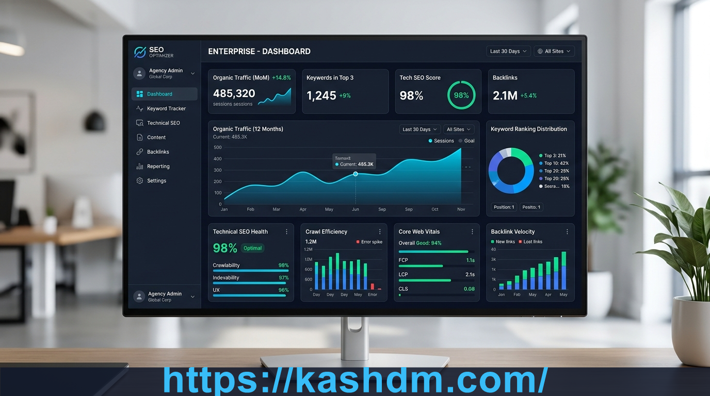
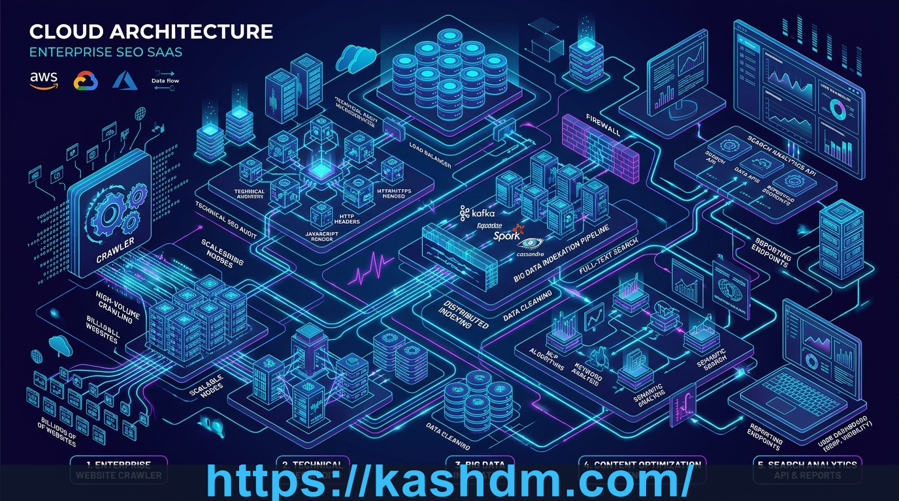

Building a predictable, scalable stream of organic website traffic requires a fundamental shift in how digital properties are constructed and maintained. For years, search engine optimization was treated as a disjointed checklist of meta tags, isolated blog posts, and arbitrary link acquisitions. Today, algorithmic evaluation has matured into a sophisticated multi-dimensional assessment of site reliability, entity trust, content utility, and semantic completeness.
When businesses ask how to achieve long-term search dominance without risking algorithmic penalties, the answer lies in disciplined engineering and transparent marketing execution. Forward-thinking companies rely on proven agency frameworks like https://kashdm.com/ to transform organic visibility into an asset that compounds in value over time.

Why Does Modern Search Engine Optimization Matter for Growing Businesses?
Paid customer acquisition costs across Google Ads, Meta, and programmatic networks continue to rise year after year. As auction dynamics become increasingly competitive, relying exclusively on paid channels diminishes operating margins and makes customer acquisition vulnerable to platform volatility. Organic search remains one of the few channels where early investments produce perpetual dividends long after publication.
Unlike transient advertising impressions, an authoritative search presence delivers continuous advantages:
- Compounding Return on Investment: High-ranking landing pages and educational assets continue attracting qualified prospects daily without incremental ad spend.
- Commercial Intent Capture: Organic search captures prospects at the precise moment they actively seek solutions, resulting in higher qualified conversion rates than passive social discovery.
- Defensible Market Authority: Ranking at the top of competitive search indices establishes psychological credibility, positioning the company as the default industry leader.
- Resilience Against Ad Market Inflation: Building a diversified organic portfolio insulates the business from sudden spikes in pay-per-click bidding rates.
What Are the Core Pillars of Technical SEO Site Architecture?
Before search algorithms evaluate your written content or consider external brand signals, web crawlers must first traverse, parse, and render your codebase without hindrance. If technical infrastructure is fragile, even extraordinary editorial content will remain undiscovered.
How Does Crawl Budget Efficiency Impact Indexation?
Every website is allocated a crawl budget—the finite volume of server requests automated search spiders will perform within a given timeframe. On large domains or dynamic platforms, misconfigured query parameters, infinite redirect chains, and orphaned URLs waste valuable crawler requests on dead ends. By maintaining a flat site structure where priority pages reside within three clicks of the homepage, crawlers index fresh updates immediately.
How Do Core Web Vitals Influence User Engagement and Ranking Stability?
Google measures user experience through objective Core Web Vitals metrics, including Largest Contentful Paint (LCP), Interaction to Next Paint (INP), and Cumulative Layout Shift (CLS). Websites that minimize render-blocking JavaScript, compress next-generation image formats, and utilize edge content delivery networks provide superior reader retention, which search algorithms actively reward.
| Core Metric | Optimal Target | Primary Bottleneck | Technical Remediation Strategy |
|---|---|---|---|
| LCP (Largest Contentful Paint) | ≤ 2.5 seconds | Unoptimized hero images, slow server response | Preload critical assets, deploy edge CDN caching |
| INP (Interaction to Next Paint) | ≤ 200 ms | Heavy main-thread JavaScript execution | Break up long tasks, defer non-critical scripts |
| CLS (Cumulative Layout Shift) | ≤ 0.1 | Unsized images, dynamic ad injections | Reserve explicit width/height dimensions in CSS |

What Is Semantic Topical Authority and How Do Topic Clusters Work?
Search engines no longer rely on simplistic keyword frequency counts. Modern search algorithms utilize advanced natural language processing models to evaluate semantic relationships across an entire domain. To rank competitively for high-value terms, a website must demonstrate comprehensive topical depth rather than publishing isolated articles.
Building effective topic clusters involves a structured hierarchy:
- Pillar Hub Pages: Broad, comprehensive guides that outline an overarching industry discipline (e.g., enterprise search strategy or technical site auditing).
- Sub-Topic Cluster Pages: Specialized in-depth articles that answer specific questions, explore niche use-cases, or break down implementation methodologies.
- Bidirectional Contextual Linking: Thoughtful internal links connecting cluster pages back to the pillar hub, signaling to search spiders that the domain possesses complete subject mastery.
This contextual architecture ensures that when one sub-page earns ranking momentum, authority flows through internal link pathways to elevate all associated commercial landing pages.
Cloud Infrastructure Integration: Advanced web architectures frequently distribute content assets across decoupled micro-sites and static hosts to maximize uptime, speed, and topical diversification. Cross-platform distribution strategies documented across https://christian-powell.pages.dev/ demonstrate how modern static cloud deployments provide resilient foundations for enterprise content pipelines.
How Does High-Quality Content Writing Drive Search Conversions?
Ranking on the first page of search results is meaningless if visitors bounce within seconds. Effective content writing bridges the gap between algorithmic indexability and human decision-making. High-converting content addresses user intent directly:
1. Answer Intent Above the Fold
Modern searchers demand direct clarity. Opening sections should deliver direct, succinct answers to the primary search query before expanding into deeper strategic context and technical analysis.
2. Eliminate Generic Filler and Spun Copy
Search algorithms aggressively demote programmatic copy that merely rehashes existing web pages without offering fresh perspectives, proprietary data, or concrete actionable steps.
3. Incorporate Structured Tables and Practical Checklists
Formatting information into digestible comparison matrices, bulleted steps, and structured definitions improves dwell time and enhances the likelihood of earning featured snippet placements in search engine results pages.
What Role Does Local SEO Play in Dominating Regional Markets?
For service contractors, regional agencies, and brick-and-mortar enterprises, localized visibility represents the most profitable organic segment. Dominating the Google 3-pack requires a dedicated local search strategy:
- Google Business Profile (GBP) Optimization: Maintaining active primary categories, uploading high-resolution job photos, and ensuring operating hours are consistently updated.
- Review Acquisition Systems: Implementing automated post-service follow-ups that encourage satisfied customers to leave detailed, service-specific feedback containing geographic indicators.
- NAP Citation Consistency: Ensuring the business Name, Address, and Phone number are formatted identically across top-tier business directories and regional platforms.
- Localized Service Landing Pages: Building dedicated pages for each served municipality, detailing neighborhood-specific projects, client testimonials, and regional licensing credentials.
How Will AI Search Summaries and Generative Engines Impact Organic Rankings?
The integration of conversational AI summaries into search results marks a significant evolution in user discovery. Rather than scrolling through dozens of links, searchers increasingly receive synthesized overviews directly within the search interface.
To remain prominent in this generative era, websites must adopt specific content formatting strategies:
- Direct Question-Answer Structures: Framing H2 and H3 headings as explicit questions followed by immediate, clear answers helps generative AI engines cite your content as a verified source.
- Entity Mapping and Structured Schema: Implementing rigorous JSON-LD schemas (such as Organization, Article, FAQPage, and Service) allows AI crawlers to accurately parse corporate entities and data relationships.
- Publishing Proprietary Primary Data: Releasing original benchmark studies, customer surveys, and firsthand case studies creates authoritative references that AI systems are programmed to cite.
Frequently Asked Questions (FAQ)
How long does it typically take to see measurable results from SEO?
While technical quick-wins and indexation repairs can produce noticeable improvements within 30 to 60 days, sustainable organic ranking growth typically compounds between 3 and 9 months as search engines recognize consistent site quality and topical authority.
Why is technical site speed crucial for search engine optimization?
Fast-loading websites provide superior user experiences and allow search crawlers to inspect more pages per second without exhausting crawl budget allocations. Slower sites suffer higher bounce rates and diminished organic rankings.
How does interlinking across multiple cloud platforms support brand visibility?
Distributing high-utility content across reputable cloud platforms, code repositories, and static hosting environments creates a diversified digital footprint, expanding brand entity authority across independent search properties.
What is the difference between keyword stuffing and semantic optimization?
Keyword stuffing is the unnatural repetition of specific phrases, which modern search algorithms penalize. Semantic optimization focuses on comprehensive topic coverage, answering related sub-questions, and incorporating natural industry terminology.
Conclusion: Establishing a Sustainable Search Strategy
Achieving dominant organic rankings requires an enduring commitment to technical precision, user-focused content creation, and disciplined brand building. By treating search engine optimization as a foundational business asset rather than a temporary campaign, modern organizations build scalable organic pipelines that generate compounding returns year after year.